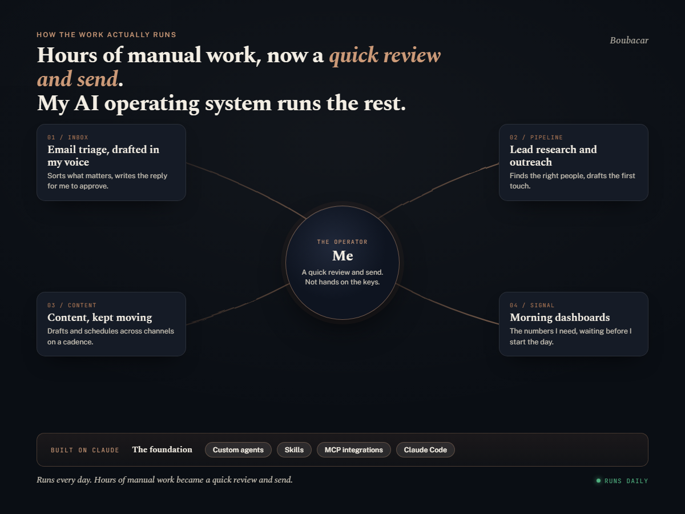
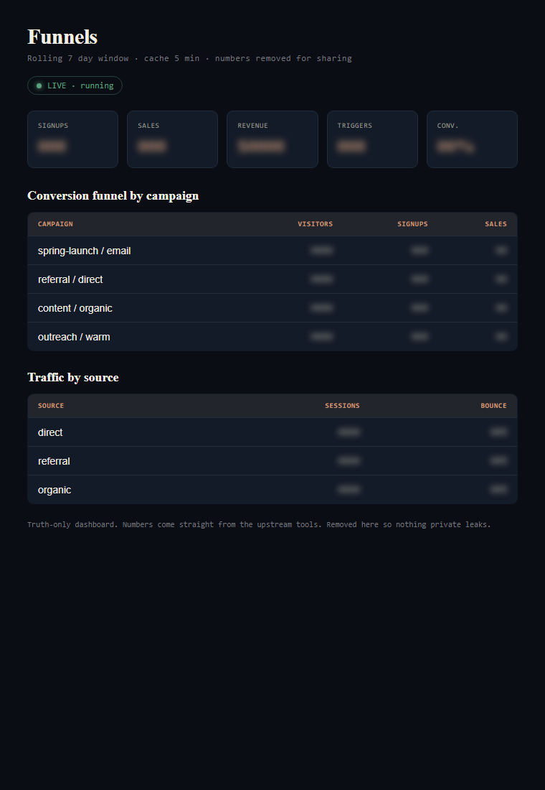
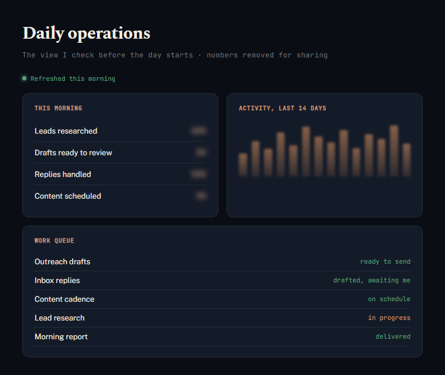
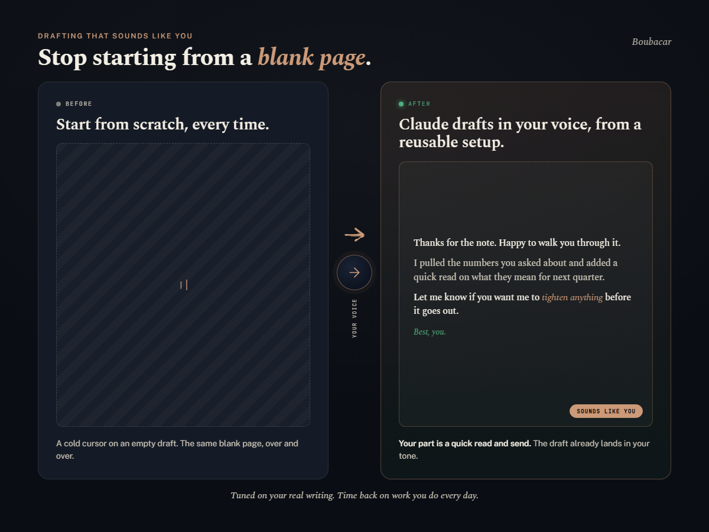

09 / Where it all lives
The evidence wall.
Real surfaces, sanitized. The diagrams are mine; the dashboards are the ones I check each morning, with the private numbers removed. A couple of tiles are live.
live
Jobs the system ran for me today
37
across triage, research, drafting, and review
My time on routine work, before and after



internal
internal
Dashboards shown with private numbers removed. Live tiles are illustrative of what the system tracks. Nothing here is a stock photo or a borrowed logo.